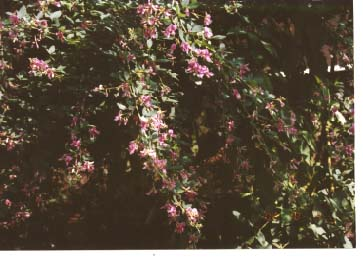

MHN植物園2002年10月

萩 萩にはいろいろな種類があるようですが、うちにあるのはピンク色の物です。冬の間は根元だけを残して上の方は完全になくなってしまうのに、夏の間には3m以上にも伸びると云う元気な植物です。
白い萩も欲しいと思っていたのですが、このピンクの花の成長が余りにもすごいので白い萩を植える場所がないことが判り諦めました。
11月になると各々の花のあとに小さな豆のような種がつきます。